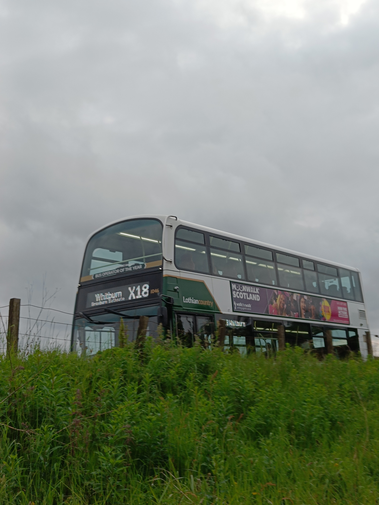
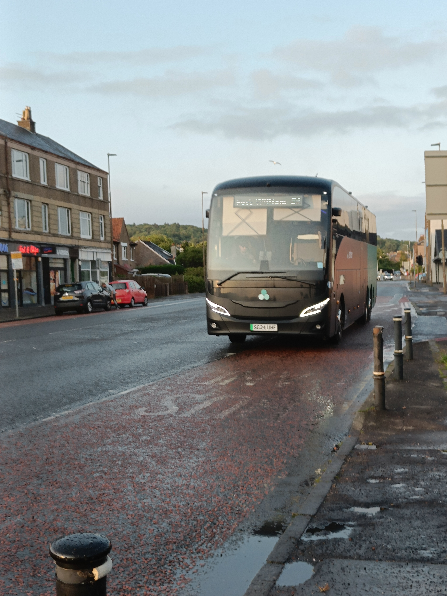
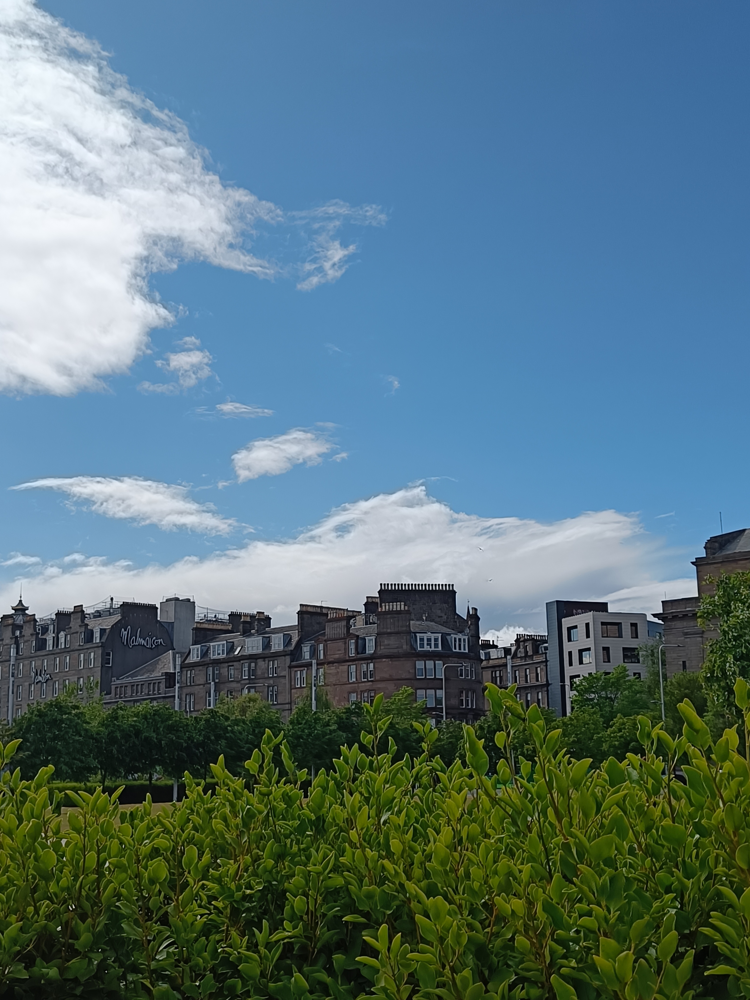

citylink woes, ember yearning, and my tailbone.
8 June 2025
on the 8th of june i fancied a journey, one that was doable but still enough to bump my mileage up - as i feel this might be a slow month miles wise, outside of a weezer concert im going to on the 30th, which is a solid 400 miles all together. regardless i wanted to get out and have a travel day. so i did.
my first destination was edinburgh, specifically the bus station, or really george place, as for whatever reason embee doesn't actually stop within the bus station, but rather the opposite side of st andrew square, george street. this was the first time i had ridden the full route from my house into the city centre for a while, and it really is no joke, 21 miles over 1 hour 45 mins, an average pace of 12 miles per hour - cycling would be faster, luckily for me, thankfully, i was on a gemini 3 - one of lothian country's premier buses, regardless i just took my usual seat at the top right, and let my music play. after a fairly long, somewhat uncomfortable slog through most of west lothian, we arrived in princes street. immediately after getting off the bus i almost stood on one of the "sand dogs", a common tourist trap in edinburgh, before recovering. and continuing on towards george street.
turning left on princes street i was greeted by a temporary construction path thing, which let me avoid the typical crossing-the-road-in-princes-street-blues, and i arrived waiting for the bus with 20 minutes to spare. thankfully through the app i was able to track my bus and check what kind it was, this time it was a yutong tce12, which are great, as the toilet is right at the back instead of being down a set of stairs, making it basically the only coach where ill use the toilet. the bus came maybe 15 minutes early, however it didn't let people on until about 5 minutes before, at which point i went to use the aforementioned toilet, and the noises it made gave me a fright, as after flushing it it sounded as though someone was knocking on the door, which gave me the fear, but fortunately it was just coach toilets being their typical loud and slightly ominous selfs. after I got out the toilet and settled down the driver started helping everyone onboard, mostly older english women put their bags into the luggage area above the seats, and then a solo scottish older lady on a bike came up to ask me where the chargers on the bus were, to which i - in a somehwat still day state simply pointed to the charger embedded in the back of the seat Infront of me and smiled, which she didn't seem to take as rude, thankfully. but after all this we started moving, smooth as ever, or atleast smooth as could be on roads in edinburgh.
it was at this point i realised my tailbone was still sore (i should probably get that checked out, huh?) as we bumped over each crack and hole in the road. my coach was headed for dundee - probably my favourite scottish city outside glasgow, which im aware is a controversial opinion but something about the tayside city just scratches an itch of mine, as opposed to the other, perth, which is probably my least favourite of the 8. anyways before I knew it we were deep into fife, after a nice view of an lner train crossing the forth road bridge - i also noticed that we crossed the forth via the road bridge, which is interesting, as ember usually uses the queensferry crossing, I think this might've been their dynamic routing in effect, as the queensferry crossing was clogged with traffic. this is a big plus for ember, in combination with the request stop system, with all stops that aren't essential needing to be pre-booked atleast 10 minutes before the bus arrives there, with the buses system dynamically adjusting to tickets being booked, cancelled, traffic etc... the woman with the bike got off at kinross and was speaking with the driver, I heard the driver talking about embers history and furure prospects, how they started only a few years ago with 2 coaches and now have 80+, and we're think about expanding soon (exciting!). my hope for when they do would be a route into england, particularly carlisle from glasgow, which would make sense as a coach route, be the first intra uk electric coach route, and (most importantly) make the trip still valid - and therefore free, for national entitlement card holders.
once we were nearing dundee I saw a plane taking off from the airport, a rare sighting, given dundee airport (DND) had only 42,000 passengers in 2023, and an average of only about 5 planes per day. once we were in the city centre it felt great to get off, not because the coach wasn't comfortable but because by this point i hadn't properly walked in about 3 hours 45 minutes, so i was more than glad to stretch my legs a little, before going to the v&a to use the toilet (where there was a cleaner who forgot to put up a closed sign and i scared the life out of) i went to the train station to sit down and plan what i was doing in dundee, which ended up more or less being wandering overgate and the city centre. after i had hit up greggs and felt disappointed at the fact they had nothing in the sections prior to the till, i was looking forward to hashbrowns or chicken, but no, a chocolate muffin and lucozade were my poison instead.

by this point I figured atleast planning my journey home would be sensible, my only real criteria was to go to glasgow, from seagate bus station, which i had never been before. it was somehwat underwhelming but not much smaller than the one in edinburgh honestly. unfortunately for me the toilet inside was closed, and even more unfortunately for me - the bus was in 20 minutes by this point, and the closest toilet I knew of? more than a 10 minute walk away. I had few options - and chose fast. I began to awkwardly sprint-walk towards wellgate, which in comparison to overgate felt like a half full retail park. at which point everything started to go wrong - I headed up the wrong alleyway style path , ending up outside the nearby library instead, and the gate was closed, necessiting me to walk all the way back round 17 minutes left, and when I eventually made it to the shopping centre itself, the escalator was closed 15 minutes left, so I had to wander to the opposite side only to backtrack towards the toilets which were basically directly beneath me, and then when I got there? they were pay toilets. 20p to get in. 12 minutes left. thankfully for me I had change on me - and there was a machine to convert a pound into several 20p coins, however it was quite confusing to use and at first it looked as though it had just nicked my money - and with 10 minutes left, it was starting to look like i wouldn't make it, fortunately it hadn't, several 20p coins were behind a awkwardly disguisef flap, and i managed to get in. the toilets, to be frank, stank, and weren't clean, hardly worth the required 20p to get in, but it was too late now and it was this or risking needing an emergency exit on the bus. by this point I was heading back to the bus station, where I realised google maps had lied to me and for some reason, shown me the literal furthest away entrance to the building, meaning my way back was far less time sensitive.
fortunately for me, it was fine and the coach wasn't even there when I got to the station, and there was a surprisingly long queue waiting for the bus to glasgow. in the bus it was fairly quiet and - one thing i prefer about citylink, double decker coaches. it makes the views from the upper deck great, especially considering you can sit at the front and have a big panoramic view of your surroundings, however once tapping my young scot on the card reader and climbing the stairs, i saw someone was already sitting in my usual seat, the top right, so I decided to respect their privacy and sit a few rows back, just to keep everything spaced out. by this point my greggs stuff was long gone, but as I usually do, I had brought a 2 litre bottle with me aswell, which did a good job at hydrating me, aswell as a bar of chocolate and 2 donuts in my bag, which i ate some of on the way to glasgow. at one point it started raining quite heavily and it was honestly quite relaxing - I had to stop myself from nodding off, and the bus slowly swaying and sharply turning? if we hadn't got to glasgow by the time we did I would've been in deep sleep.
once in glasgow I went for another pee, at another toilet that charges you and is usually inadequate considering so (one thing edinburgh bus station does better). my plan from here was to catch the flix 090 to deer park, livingston, walk to dechmont, and catch my bus home from there, but as we were pulling into the bus station I watched it leave. fortunately for me this probably resulted in me getting home quicker. due to the next bus stopping at livi being an hour, and me not having the patience to get on a bus to edinburgh, just to backtrack and waste 2 hours, I did the unthinkable. the 902. the citylink 902 is a service connecting buchanan bus station and edinburgh airport, which sounds great! the megabus/citylink AIR buses both do the same, and are some of my favourites due to this, as it is often very quiet and relatively fast, basically being a 900 that happens to stop at the airport rather than st andrew bus station. the 902? it goes through ballieston, swinton, bargeddie, coatbridge, airdrie, harthill (the town - not the services) and more on it's trundle towards the airport - its a bit like that person you know who's scared of driving on the motorway, and instead goes through every back town. regardless of this, it stops in whitburn (sort of), which is conveniently the starting point of the bus that goes past my house, and if it comes to it, walking distance. so on the 902 I go, and judging by the moquette? I think its the same one I completely killed my tailbone on - yet more reason to hate it.

once on the 902 (eugh) I once again try not to fall asleep, as if I missed my stop? the next is in livi. so a minimum of 2 buses home for me - not exactly great. regardless I play my music and enjoy the "scenery" of greater glasgow, just glad to be home bound. upon getting close to the stop I make sure to stand up fairly early, just making sure the driver knew I wanted off (I have trauma from the time I almost ended up in dunfermline trying to get to blackhall via a stagecoach bus without a stop button) and sure enough, she turned into park. now i just needed to brave crossing the road without a crossing on a road primarily used by hgv exiting/joining a motorway (how fun). less fun was the fact that upon crossing, there was a dead bird - which sure, unpleasant enough on its own, but prior to this, a few days ago, me and my girlfriend watched it get hit! so seeing it still there and now it's vaguely rotting corpse wasn't exactly inspiring. either way I was happy to be back on west lothian turf. I opened the lothian bus app and noticed the bus was waiting at the first stop, which is this bus's stopover point, so it looked like I had a chance at making it. unfortunately for me the people who designed heartlands services didn't exactly factor in walkability, and due to this I had to stop every 5 seconds to wait for traffic to clear so I could cross the road. by the time I got to the bus stop? I could see it in the horizon - typical. I couldn't be bothered waiting 30 minutes so I just walked home from here, which was relatively uneventful, but just a bit of a pain, especially given the somewhat prominent hill between whitburn and armadale, but by 20:33, after 180 miles, and 6 hours 27 minutes of buses - I was home.